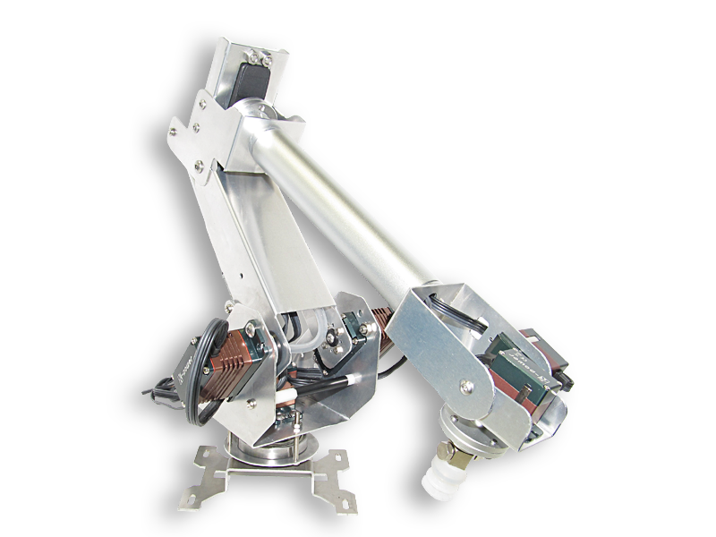
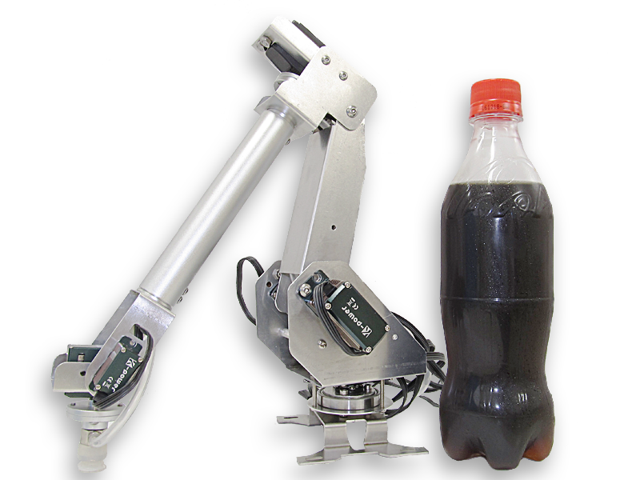

Nanaboは業務用で使われるような本格的な６軸ロボットアームを、個人でも扱えるよう小型にそして安価に作ったものです。
軽量かつ強度のあるアルミ合金フレームに高性能のサーボを組み合わせることで、動きのがたつきを抑え、工業用のように非常に軽やかかつ正確な動きを実現しています。
各関節には自分の角度を認識するフィードバック機能が搭載されています。実際にアームを手で動かすことで、動きを記憶させることが可能です。
折りたたんだ状態で最大25cm、伸びても50cm程度で、机の上で動かせるコンパクトなサイズです。
